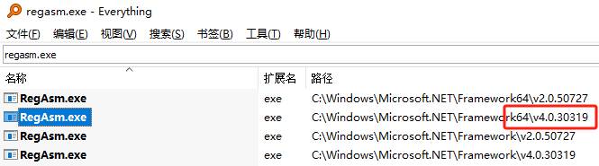

插件_注册安装
.net的dll都是要注册才能使用，注册的话我们要用到regasm.exe这个文件。我们要用到的是64位的，v4.0的
任意文件夹目录下，新建两个bat文件，用来执行regasm程序的注册操作。
安装
1 | set path=%~d0 |
卸载
1 | set path=%~d0 |
插件_程序安装
这一种情况感觉比较高端一点，可以生成msi格式的安装包。
这种方式我经常使用的是Inno Setup 5这个软件，来制作安装包。它的功能比较强大，大家可以自行学习。
它的好处就是当前有很多文件需要包装的时候，压缩比还是不错的。
能够生成快捷方式，插件注册，文件释放，程序菜单的生成，自动生成删除程序的信息，可以在windows的程序列表中显示。
可以设置多种语言文件，还有安装时显示各种许可信息